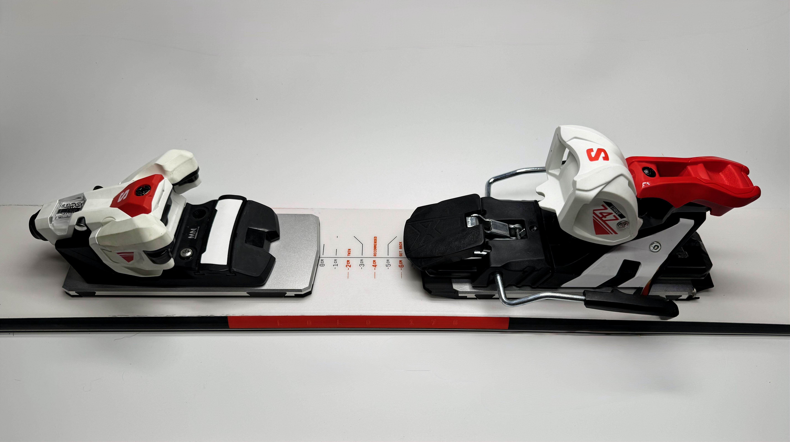
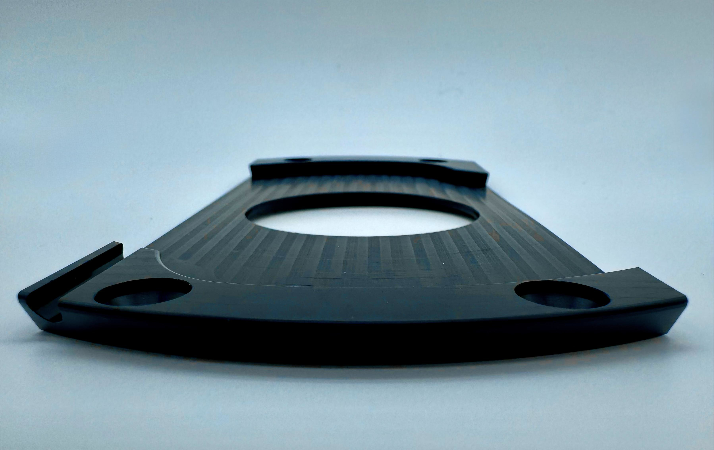

One interface. Your whole quiver.
PUPS — the Precision Universal Plate System — is a two-piece mechanical interface that lives between your ski and your binding. A base plate is screwed to each ski once. A top plate carries each binding. The two halves engage on three axes and lock with pins, so a binding becomes something you move rather than something you mount.
Eight millimetres of stack. No adapters, no compromise in feel, no drill press. What follows is every part of the system, one at a time.

Four moves,
then you ski
Step through the sequence below — installation is simple, and operation is smooth and seamless.

The connection
is mechanical
Rotate the top plate into the base plate and the interface engages against vertical, horizontal and lateral load simultaneously. Nothing relies on clamping force or friction — the geometry itself carries the load, then the locking pins drop in and the two plates behave as one piece.
What that means underfoot: no slop when you load an edge, no creep over a season, and no hollow, floating feel between boot and ski. It transmits like a directly mounted binding because, mechanically, it is one.
Any binding
you already own
Top plates arrive pre-drilled for the most common alpine, touring and telemark patterns. You bolt your binding to its top plate once — that pairing never comes apart again — and from then on the binding travels between skis instead of being installed into them.
Buy one base plate set per ski, one top plate set per binding. The combinations multiply from there.


Move your
stance, not
your skis
The base plate accepts the top plate at any position up to ±2 cm* from the factory-recommended line. One ski, several personalities — and the change takes minutes on a tailgate, not an afternoon in a shop.
Eight millimetres,
wider footprint
Every plate system trades stack height for versatility. PUPS spends eight millimetres — thinner than a phone — and gives back a footprint wider than a standard binding's, so the load spreads further across the ski and more of your input arrives at the edge.
The base plate is POM-H: flexible enough to move with the ski's camber, tough enough to hold a screw through an Alaskan season. The top plate is 7075 aluminium, the same alloy the bindings themselves are built from.
| {{ row.n }} | {{ row.prop }} | {{ row.val }} |
Find your pack
Built in a garage in Anchorage by two skiers who were tired of choosing between skis instead of riding them all.